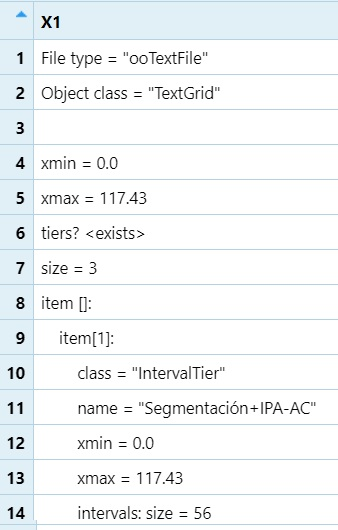
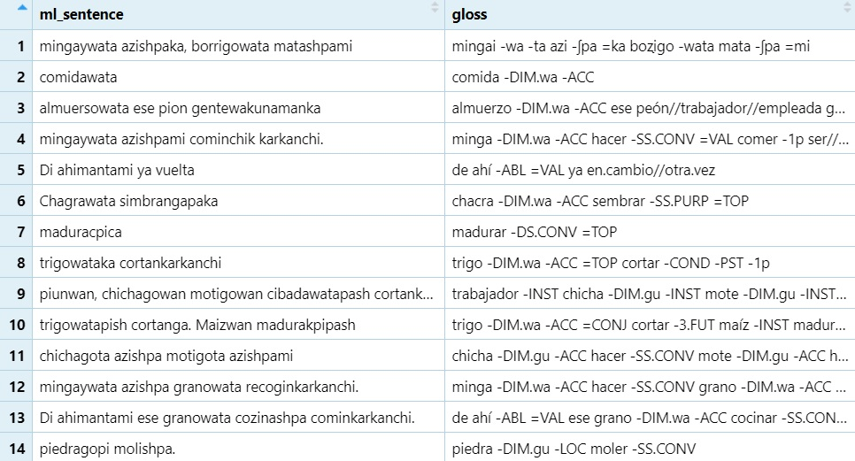
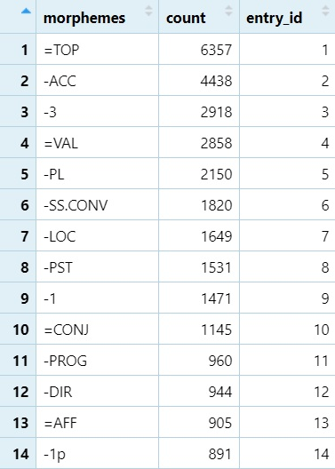
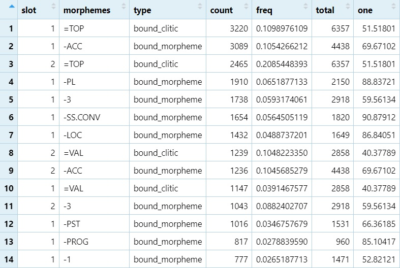

Natural Language Processing
Dr. Jesse Stewart
2025-08-12
1 Introduction
1.1 What is NLP and How Does it Apply to Computational Linguistics?
Natural Language Processing (NLP) is a field at the intersection of computer science, linguistics, and artificial intelligence that focuses on enabling computers to process, analyse, and generate human language. NLP techniques allow us to transform raw linguistic data—whether written, spoken, or multimodal—into structured representations that can be searched, modelled, and interpreted by algorithms. These techniques range from simple tasks such as tokenising words and counting their frequencies, to complex operations like parsing syntactic structures or modelling semantic relationships between words.
There are a variety of NLP tools available—such as NLTK, spaCy, Stanford CoreNLP, and UDPipe—that are specifically designed for major world languages like English and Spanish. While these resources are powerful for well-documented languages, they are often severely lacking for under-documented and under-studied languages, where no large annotated corpora or pre-trained models exist. As a result, researchers working with these languages often need to design customized tools and workflows from the ground up.
In computational linguistics, NLP provides the toolkit for testing linguistic theories on large datasets, uncovering patterns that might not be apparent from small-scale qualitative analysis. For example, NLP methods can reveal statistical distributions of morphemes across a corpus, model phonotactic constraints, or measure the co-occurrence of syntactic structures across dialects. When combined with linguistic annotation tools such as ELAN and Praat, NLP enables researchers to work directly with annotated speech data, bridging the gap between manual annotation and large-scale quantitative analysis. In this module—and in other forthcoming modules—we focus on Media Lengua, an under-documented mixed language spoken in Ecuador, using NLP methods to explore its morphological and lexical patterns.
1.2 This module
In this module, we will walk through the process of preparing linguistic data for NLP analysis, starting from annotated speech data in ELAN, converting it into a format compatible with Praat, and then processing it in R for statistical and visual analysis. The goal is to demonstrate how to move from raw, time-aligned annotations to structured datasets that can be used for frequency analysis, distributional studies, and statistical modelling of linguistic patterns. By the end of this module, you will have a better understanding of workflow for exporting, cleaning, and analysing linguistic data in a reproducible way.
2 ELAN
ELAN (EUDICO Linguistic Annotator) is a free, open-source software
tool developed by the Max Planck Institute for
Psycholinguistics for creating, viewing, and analysing
time-aligned annotations of audio and video
recordings.

2.1 Key Features
- Multiple annotation tiers – Create separate layers for orthographic transcription, phonetic transcription, morpheme segmentation, glossing, translation, etc.
- Time alignment – Link each annotation to a precise point or segment in the media file for exact synchronization between recording and annotations.
- Custom tier types – Define tier hierarchies (e.g., words → morphemes → glosses) that fit your project’s needs.
- Search and filtering – Search across a single file or multiple files (via a domain).
- Export formats – Export to formats like CSV, tab-delimited text, or Praat TextGrid for acoustic analysis.
2.2 Why Linguists Use ELAN
ELAN is widely used in language documentation, phonetics/phonology, morphosyntax, and multimodal communication studies because it allows you to:
- Create structured, multi-tier annotations of speech data.
- Work with under-documented and
under-studied languages that lack pre-existing
computational tools.
- Integrate audio/video with transcription, translation, and linguistic analysis.
In our workflow, ELAN is the starting point:
- Annotate speech recordings (segmentation, morphemes, glosses,
translations).
- Export the annotations (e.g., to Praat TextGrid)
for acoustic or computational processing.
- Prepare the exported data for NLP analysis in R.
2.3 Workflow
2.3.1 Files
- Download the following files:
001_AC-Mingas.eaf
2010–43-01-ElicitationsLong–LG.eaf
2016–Zoom02–LG-MT.eaf
2.3.2 Exploring the data
001_AC-Mingas.eaf is a sample of narrations gathered
between 2009-2010 that were used in the 2011 publication of Stories
and Traditions from Pijal: Told in Media Lengua Available
on Amazon
“Narration” files contain three tiers:
- Media Lengua tier with the speaker’s name
- Segmentation tier (morpheme divisions and IPA transcriptions)
- Interlinear glosses
2010--43-01-ElicitationsLong--LG.eaf is a sample of
elicitations gathered between 2009-2010 that have been used for a number
of publications. They contain a lot more data than the “Narration”
files.
“Elicitation” files contain 7 to 8
tiers:
- Media Lengua tier with the speaker’s name
- Kichwa (Quichua) tier with a Kichwa translation of the Media Lengua
utterances
- A (Rural) Spanish translation of the Media Lengua utterances
- A Standard Spanish translation of the Media Lengua utterances
- The elicited sentence
- Segmentation tier (morpheme divisions and IPA transcriptions)
- Interlinear glosses
- An English translation of the Media Lengua utterances
(optional)
Note: that if you right click on the tier names,
then click Sort Tiers, you will see the hierarchies/
dependencies used in this file.
2016--Zoom02--LG-MT.eaf is a sample of the
conversational data. This is the most common data type in the Media
lengua collection.
“Conversation” files contain 6 tiers per
speaker:
- Media Lengua tier with the speaker’s name
- Kichwa (Quichua) tier with a Kichwa translation of the Media Lengua
utterances
- A (Rural) Spanish translation of the Media Lengua utterances
- A Standard Spanish translation of the Media Lengua utterances
- Segmentation tier (morpheme divisions and IPA transcriptions)
- Interlinear glosses
2.3.3 Creating Domains
A Domain is a saved list of files that you want to work with as a set.
- Open ELAN.
- Click Search → Search Multiple EAF…
- Click Define Search Domain → New Domain…
- Select your
.eaffiles → click >> to add them → click OK.
- When prompted, name the domain CompLING.
- Return to the ELAN main screen.
2.3.4 Exporting from ELAN to Praat (TextGrid)
ELAN has multiple options for exporting multiple files. However, none
of the options are ideal for our purposes.
We want our data in the following format (see table below), however,
this is not possible without substantial editing. We’ll, therefore,
export all the files as Praat textGrids. There will still
be substantial editing, but less so than with other export formats.
| segmentation | gloss | ml_sentence | name | translation_available | word_count | Filename | entry_id |
|---|---|---|---|---|---|---|---|
| aɲo enteɾo-pa=mi ese oxa-wa-ta=ka monto-na-nka-ɾka-nʧi | año entero-POSS//BEN=VAL ese hoja-DIM.wa-ACC=TOP amontonar-NOM.na-COND-PST-1p | Año enteropami ese hojawataka montonankarkanchi | Anita | FALSE | 5 | 001_AC-Mingas | 1 |
| mio edad=mi 39 aɲo-ta tene-ni | mi edad=VAL trenta.nueve año-ACC tener-1 | Mio edadmi 39 añota teneni | Lucia | TRUE | 5 | 2010–43-01-ElicitationsLong–LG | 2 |
| aki-ta=ka ja tɾankaʃka=ma ja no bale-nkaʃka pasa-ngapa=ka | aquí-ACC=TOP ya trancado=AFF ya no valer-PERF.COND pasar-SS.PURP=TOP | Aquitaca ya trancashcama ya no valencashca pasangapaca | Mercedes | TRUE | 7 | 2016–Zoom02–LG-MT | 3 |
Go to File → Export Multiple Files As → Praat TextGrid…
In Domain, choose CompLING → click Load.
Click Select All → Next.
Choose your destination folder → click Finish.
2.3.5 Underlying formats
Now, if you open these textGrid files in Praat, we get
something that looks like the following images:
001_AC-Mingas.eaf
2010--43-01-ElicitationsLong--LG.eaf
2016--Zoom02--LG-MT.eaf
These files are pretty useless, especially for phonetic analysis
since strings of text are annotated rather than e.g., segmental
elements, which is the whole point of Praat. However, I
find the underlying structure of Praat
textGrids much easier to extract information from than ELAN
eaf files (likely because I’m a phonetician and I’m more
accustomed to Praat). It should be noted, however, that ELAN uses XML
(Extensible Markup Language), which is a plain-text, tag-based format
used to store and exchange structured data. It uses opening and closing
tags to define elements and their hierarchy, XML is both human-readable
and machine-readable, making it common for data interchange, document
markup, and configuration files. Unlike HTML, XML doesn’t have
predefined tags — you create tags that describe your specific
data.
2.3.6 Information Needed
from Praat TextGrids
When we export annotations from ELAN to Praat
TextGrid format, each tier in the TextGrid
contains several key pieces of information. These will form the basis of
our NLP data processing.
- size – The total number of intervals (rows) in the
tier.
- name – The name of the tier (e.g., Media
Lengua, Segmentation, Gloss).
- xmin – The time (in seconds) at the beginning of
each annotation interval.
- xmax – The time (in seconds) at the end of each
annotation interval.
- text – The annotation text itself (e.g., transcription, morpheme, or gloss).
We will extract these values so that we can:
- Keep track of the structure and timing of each annotation.
- Align different tiers for analysis.
- Convert the data into a tabular format suitable for NLP processing in R.
3 NLP Code - data wrangling
Data wrangling (sometimes called data munging) is the process of cleaning, transforming, and organising raw data so that it can be used effectively for analysis. Think of it as taking messy, inconsistent, or incomplete data and reshaping it into a tidy, structured format that’s ready for statistical modelling, visualization, machine learning etc.
3.1 Our goal
Get the TextGrids into a computer-readable format for statistical
analysis.
3.2 Extracting annotations from Praat TextGrids
- We first load minimal dependencies, point R at the folder of
.TextGridfiles, list those files, and start a helper that will parse each file into tier-level records. The immediate goal is to recover, for every tier, the tier name and the intervals (which we’ll pull in the next step).
Load required libraries
library(stringr) # regex helpers (str_match, etc.)
library(dplyr) # data manipulation (group_by, summarize, mutate)stringr - An R package that makes working with strings
(text) and regular expressions easier, more consistent, and more
readable.
dplyr - An R package for fast, intuitive data manipulation
using a consistent set of ‘verbs’ like filter(),
select(), mutate(), group_by(),
and summarize().
| dplyr Verb | Purpose | Example (dplyr) | Base R Equivalent Example |
|---|---|---|---|
filter() |
Select rows matching a condition | filter(df, age > 30) |
df[df$age > 30, ] or
subset(df, age > 30) |
select() |
Choose specific columns | select(df, name, age) |
df[, c("name", "age")] |
mutate() |
Add or modify columns | mutate(df, age_months = age * 12) |
df$age_months <- df$age * 12; df |
group_by() |
Group data for grouped operations | group_by(df, gender) |
split(df, df$gender) (returns list of data.frames) |
summarize() |
Collapse each group into summary statistics | summarize(df, avg_age = mean(age)) |
data.frame(avg_age = mean(df$age)) or with
tapply(df$age, df$gender, mean) for groups |
This sets the working directory path where R will look for the
textGrid files.
folder <- "C:\\Users\\Courses\\Computational Linguistics - LING 349 Fall\\"
Next we’re going to list all files in
that directory, to return the full path of each
textGrid.
files <- list.files(folder, pattern = "\\.textgrid$", full.names = TRUE, ignore.case = TRUE)
View(files)list.files() - A base R function that lists all files in
a given folder.
folder - contains the dirctory path that we just defined in
the previous step. It Tells list.files() where to
look.
pattern = "\\.textgrid$" - Only returns filenames that
match this regular expression. \\. means a literal dot,
followed by textgrid at the end ($) of
string.
full.names = TRUE - Returns the full file path for each
match, not just the filename. This is important because we’ll later need
to read each file from its exact location.
ignore.case = TRUE - Makes the pattern match
case-insensitive, so it catches both
.TextGrid and .textgrid. This avoids problems
if file extensions have inconsistent capitalization. files
- The variable name where all matching file paths are stored. This gives
us a ready-to-use vector of file paths for processing in the next
step.
See for yourself
edit=edit(files)
Now we’re going to load additional libraries.
library(tibble)
library(tidyr)
library(ggplot2)
library(forcats)tibble - Provides a modern version of data frames.
tidyr - Focuses on data tidying (as the name suggests):
reshaping messy data into tidy formats.
ggplot2 - A widely used package for data visualization
based on the grammar of graphics.
forcats - Provides tools for working with categorical
variables (factors).
The next step in this workflow will be the creation of a list where
we will eventually store our data:
# Results list
results <- list()
View(results)- There’s not much to explain here. It’s just an empty list.

We’re now going to build a large for loop to do the bulk
of the data wrangling.
3.3 Strategy for the large For-Loop
We’ll go over the workflow in small chunks, explain
each step, and only then wrap it in a single for (...)
loop. This makes it clear what each line does and why
we need it. Finally, we’ll include the entire loop so you can run it
end-to-end.
3.3.1 Read a single TextGrid (one file, no loop yet)
Goal: load raw lines, normalize whitespace, and keep only the lines
we care about.
Practice data:
# pick one file to run our workflow on.
one_file <- files[1][1]selects the first file in the list ([2]would pick the second file etc.)
Now to load the file:
textgrid_mani <- data.frame(X1 = read_lines(one_file, locale = locale(encoding = "UTF-8")))data.frame= puts the loaded data into a data frame.read_lines= from thereadrpackage reads a text file line by line.
one_file= This is the file you are loading (e.g., a TextGrid or transcript).
locale= ensures that the file is interpreted using UTF-8 encoding

Now we’re going to run a regular expression to remove any white spaces from the beginning of each line.
textgrid_mani$X1 <- gsub("^\\s+", "", textgrid_mani$X1, perl = TRUE)When we loaded the textGrid, the column name defaulted to
X1. The regEx code says, at the beginning of each line
(^), followed by one or any number (+) of
white spaces (\\s). We then want to replace this with
nothing ("") in the X1 column.
perl supports more advanced constructs like ‘look ahead’. I
keep =TRUE as the default.
mani1 <- filter(textgrid_mani, grepl("^(name|intervals[^:]|text).*", X1))
# I'm using 'mani' to mean 'manipulation'. This will be the first of 11filtercomes from dplyr. It’s similar tosubsetas it keeps only the rows of a data frame that satisfy a given condition.
- The condition in this case is find the word
nameor (|)interval(not (^) followed by a colon:) ortextat the beginning (^) followed by anything or nothing (.*).

We’re now going to join interval lines with their text.
Goal: ensure intervals [n] and the following
text = live on the same line. That way each line of text
will have a number associated with it.
mani2 <- paste(mani1$X1, collapse = "\n")paste()joins elements of a vector (mani1in this case) together.
collapse = "\n"means that each element ofmani1$X1will be separated by a newline character when combined.
Next, we’re doing a regular expression–based substitution to
clean up the formatting of the textgrid content.
mani3 <- gsub("(intervals\\s*\\[[0-9]+\\])\\s*\\n\\s*(text\\s*=)",
"\\1 \\2", mani2, perl = TRUE)- This relatively complex regular expression reads: find group one
(first set of parentheses) where we look for the literal word
intervalsfollowed by zero or more (*) white spaces (\\s), followed by a literal open bracket ([), then numbers0-9one or more times (+) followed by zero or more (*) white spaces (\\s), a newline (\\n), then again zero or more (*) white spaces (\\s). We then have our second group where we look for the literal wordtextfollowed by zero or more (*) white spaces followed by an equals sign (=).
- Then group one is added, (
\\1) followed by a space () and then the second group (\\2), which essentially removes the spaces and linebreak (\\s*\\n\\s*) replacing it with a space ().
Note: When we view this, the is a single line of text.
Now we need to convert this back to a data frame where each new row
is created based on a newline (\\n).
Note: There are only newline characters after our
text string now, so this will essentially keep
interval and text in the same row, which was
our goal.
mani4 <- data.frame(X1 = strsplit(mani3, "\n")[[1]])strsplit= “string split”, splits the stringmani3wherever there is a newline character (\n)
[[1]]= The result is a list, where the first element ([[1]]) contains a vector of all lines.
Next we’re simply going to remove rows with no characters.
mani5 <- mani4 %>%
filter(!grepl('""', X1))Run nrow(mani4) and then nrow(mani5) to see
how many rows were removed.
Time to remove the meta data from the textGrid. We’ll do this in a two steps.
mani6 <- mani5 %>%
mutate(X1 = gsub("\\s*intervals\\s*\\[", "", X1))
mani7 <- mani6 %>%
mutate(X1 = gsub("\\] text =", "\t", X1))- The first replaces the literal
intervalstext, any surrounding whitespace (\\s*), and the literal opening bracket ([) with nothing ("").
- The second replaces the literal closing bracket (
]), a space, the literal wordtext, a space and an equals sign (=) with a tab (\t).
Based on the data in mani7, we’re going to create a new
data frame that will contain the column names from the tier names in the
Praat textGrid.
tier_names <- mani7$X1[grepl("^name.*", mani7$X1)]To do this, we’re going to create a new object called
tier_names, and add in data from mani7’s X1
column. We want the data that starts (^) the word
name followed by any other text.
tier_names2 <- as.data.frame(tier_names)Then we convert this to a data frame.
Next we’re going to obtain the name of the consultant. I’ll do this in three steps.
#1
consultant <- tier_names2 %>%
filter(!grepl("(-|English)", tier_names))
colnames(consultant)[1] <- "X1"
#2
consultant2 <- consultant %>%
mutate(X1 = gsub('name = "', "", X1))
#3
consultant3 <- consultant2 %>%
mutate(X1 = gsub('"$', "", X1))- In step one, we’re coping the rows from
tier_names2that don’t contain a dash (-) or the wordEnglish. The only row that does not contain a dash is the row with the consultant’s name. When I wrote this code earlier, this was the case withinglés-ABas well, but one of the 80 + files accidentally hasEnglish, so we need to account for this as well (and no one’s name is “English”). After this, we name the columnX1to keep things consistent (see above image).
- Step 2, just deletes the meta data. Here, we removed the literal
word
namefollowed byspace,equalssign, and the open quote (").
- Step 3 removes the closing quote (
") at the end of the string ($).
Next, we’re going to change the consultant’s name to
MediaLengua because the Media Lengua utterances are found
under the consultants names rather than under a generic
MediaLengua title, which the computer needs for data
processing. We’re going to go back to tier_names2 to do
this.
#1
tier_names_ML <- ifelse(!grepl("(-|English)", tier_names2$tier_names),
'name = "MediaLengua"',
tier_names2$tier_names)
#2
tier_names_ML2 <- as.data.frame(tier_names_ML)
#3
colnames(tier_names_ML2)[1] <- "Names"
#4
all <- tier_names_ML2- The first regular expression says, if a dash (
-) or the literal wordEnglishis not found in a row, replace whatever is in that row withname = "MediaLengua. You’ll notice that this search and replace takes place in thetier_namescolumn.
- Then we convert this modification to a data frame.
- We then change the name of the first column to
Names. - We finally pass
tier_names_ML2toallfor safe keeping.
Now we’re back cleaning up the meta data here.
#1
all2 <- all %>%
mutate(Names = gsub('(name = "|")', "", Names))
#2
all3 <- all2 %>%
mutate(Names = gsub('(-.*$|"$)', "", Names))
#3
all3$count <- seq(from = 1, to = nrow(all3))- The first regEx says find the literal word
namefollowed by a space, equals sign, and another space (=) or (|) any quote (") and replace these mathces with nothing.
- The second says get rid of the dash (
-) followed by anything else (.*$) until the end of the string or (|) a quote (") at the end of the string. These names are now generic and can be applied to all the data.
- In the third step, we a a new column called
countthat is a sequence from 1 to the last row.
We’re now moving back to the mani objects to work on the
data some more as we now have the consultant name and data names
isolated. Recall that the column name of this data frame is
X1.
mani8 <- mani7 %>%
mutate(Number = str_extract(X1, "^\\d+"))- We’re going use the string extract function to make a new column
with the number from the original
intervalentry. This regEx extracts one or more (+) numbers (\\d) from the beginning of a string (^).
After this, we’re going to arrange the values so that all 1’s are
together, all 2’s are together, all the 3’s are together etc. What does
this do? It takes each utterance and puts its corresponding information
directly after it. For example, in the original texGrid,
the Media Lengua utterances were all together under
name = MediaLengua (previously the consultant’s name), then
there was another section with the Kichwa translations under
name = Quichua-AB and so on. Instead of having all the
utterances together and all the translations together, we’re going to
take each utterance and move its corresponding information directly
under it.
For example, the first 1 is the rural Spanish translation, the second 1 is the Media Lengua sentence, the third 1 is the gloss, the fourth 1 is standard Spanish translation, the fifth 1 is the Kichwa translation, the sixth 1 is the segmentation and IPA transcription, and the seventh 1 is the English translation. So, putting all the 1s together puts the information from each utterance together.
mani9 <- mani8 %>%
arrange(Number)- Here simply use the
arrange(from thedplyrpackage) function on theNumbercolumn.
Our next goal is to create a column called ‘count’ that tells us how many columns are associated with each utterance.
mani10 <- mani9 %>%
group_by(Number) %>% # group by number
mutate(count = row_number()) %>% # assign 1, 2, 3...
ungroup()- We’re going to use the
groupfunction, from thedplyrpackage, to essentially treat each unique entry as a group, so that anything in this group is manipulated the same way. So, all 1s are grouped together, all 2s are grouped together etc.
mutatecreates a new column calledcountand puts the row number of each unique group, so
1 = 1
1 = 2
1 = 3
1 = 4
1 = 5
1 = 6
1 = 7
2 = 1
2 = 2
2 = 3
2 = 4
2 = 5
2 = 6
2 = 7
etc… <>
This results in the following data set:
Now we’re going to match the numbers in the count column
from the all3 object to the numbers in the
count column in the mani10 object. The matches
will be transferred to a new column in the mani10 object
called Names
mani10$Names <- all3$Names[ match(mani10$count, all3$count) ]- This transfers the name of the original tiers (now generalized) to each one of the strings based on whether its an utterance, translation, gloss, elicitation, or IPA segmentation. The result should look like:
The next step is once again clean up.
#1
mani11 <- mani10 %>%
mutate(X1 = gsub('(^\\d+\\s*"|"$)', "", X1))- The first regEx removes one or more (
+) number(s) (\\d) from the beginning of each row (^) followed by zero or more (*) white spaces (\\s) and then the open quote ("). After the or (|) symbol, we remove the final ($) quote (") by replacing everything with nothing ("").
Now, let’s just back up our work. This is good as you progress into code that could mess up all your work.
mani12 <- mani11The next step is to make a data frame that puts each tier name as a column name.
dataset <- data.frame(matrix(ncol = length(all3$Names), nrow = 0))
colnames(dataset) <- all3$Names- To make a data frame we create a matrix with the same number of
columns that are present as rows in the
all3object in theNamescolumn. We don’t want any rows yet since the data will be transferred later, so we setnrows(number of rows) to zero (= 0).
- Next, we import the rows from the
all3as column names (colnames) in the new dataset.

The next step is to split the data by column.
split_data <- split(mani12$X1, mani12$Names)mani12$X1is the data to be split.
mani12$Namesare the “labels” that determine how to split (the column names in this case).
Now in the final (major) step, we’re going to reshape the data set:
reshaped <- mani12 %>%
select(Names, X1, Number)- With
select, we select the relevant columns (Names,X1,Number)
reshaped <- reshaped %>%
group_by(Number, Names)- With
group_bywe group the data byNumberandNames- This means, all
1’s inNumberare a group, all2’s inNumberare a group, allQuichuainNamesis a group;MediaLenguainNamesis a group etc…
- This means, all
- When we group by both
NumberandNamesit counts all the times the unique row names appear with a unique number.- For example, in the
Narrationsfile all the unique row names (Segmentación+IPA,Glosa, andMediaLengua) appear with the number10once. - In the
Converstationsfile, all the unique row names (MediaLengua,Segmentación+IPA,Español,Quichua,Español Estándar,Glosa) appear with the number10twice!- How is this possible? There are two speakers; in the original Praat
TextGrid, speaker 1 is assigned an
Intervals [10]and speaker 2 is assigned anIntervals 10. The first set of unique row names corresponds with the 10 from the first speaker and the second set of unique row names corresponds to the second speaker. Based on this, we could actually assign the correct name to each speaker, but we’re not going to do this for task.
- How is this possible? There are two speakers; in the original Praat
TextGrid, speaker 1 is assigned an
- Grouping makes later operations (like
mutate(row_number())) happen within each group.
- For example, in the
reshaped <- reshaped %>%
mutate(row = row_number())- With
mutate, we add a row index within groups- This means for each
NumberandNamesgrouping, you assign a row number (1, 2, 3, …).
- This ensures that if there are multiple rows per group, each row gets a unique index.
- This means for each
reshaped <- reshaped %>%
pivot_wider(
names_from = Names,
values_from = X1) %>%
ungroup()pivot_widerpivots from a long format to a wide formatnames_fromare the unique column names from theNamescolumn.
values_fromfills cells with values from theX1column
ungroup()releases theNamesandNumbergrouping
To conclude this chuck there are three minor additions. The first
involves placing the consultant’s name and the second involves adding in
the file name. We will replace [1] with [i]
once we put this in the loop.
reshaped$Name <- rep(consultant3)
reshaped$Filename <- rep(basename(1))repis short for ‘repeat’. It basically populates a column with the same information repeatedly.
basename()is a utility function for working with file paths. It strips off the directory portion of a file path, leaving only the file name.
3.4 The
for loop
Until now, we’ve only been manipulating a single file, but the
process we’ve created needs to be applied to all the files (81 in the
total dataset). Since we want the same thing done to each file, we can
automate this process with a for loop.
To do this, we’re going to remove one_file from our code
and add the following:
for (i in files) {
cat("Processing:", basename(i), "\n")- This code initiates the
for loop
i- This is the loop variable (sometimes casually called a
placeholder).
- It takes on each value of the vector/list files in turn:
- First loop: i is equal to the first element of files
- Second loop: i is equal to the second element of files
- …and so on, until the last element of files.
- Since
filesis a list of file paths, theniwill literally be:- “path/to/001_AC-Mingas.textgrid”
- “path/to/2010–43-01-ElicitationsLong–LG.textgrid”
- etc.
- “path/to/001_AC-Mingas.textgrid”
- First loop: i is equal to the first element of files
- This is the loop variable (sometimes casually called a
placeholder).
cat()- This is short for
concatenateandprint.
- As we discussed earlier,
basename()extracts the file name from a full path.
- So, basically, this will let us know which file is processing during the loop as it will print the file name on the screen as it’s “Processing:” as per the text we outlined.
- This is short for
\n- This prints the name of the file being processed on a new
line.
- This prints the name of the file being processed on a new
line.
The next minor modification we need to make is in our initial
mani file, so that on each loop, it’s grabbing data from
the next textgrid.
textgrid_mani <- data.frame(X1 = read_lines(i, locale = locale(encoding = "UTF-8")))- Here, we simply replace
1withiso that instead of only grabbing the first textGrid, it grabs the next one in sequence. Other than that change, the code is exactly the same.
The rest of the code stays exactly the same until the end of the
loop.
At the end, we need to append the data to the original list
we created outside the loop, so that on each iteration of the loop, the
processed textGrid gets placed after the other until we reach the
end.
results <- append(results, list(reshaped))appendadds the processed data to the list after each iteration from the list form ofreshape.
After looping through each file, the results output (a list) will look like this:
The entire code placed in the
for loop
#Libraries
library(readr)
library(tibble)
library(tidyr)
library(ggplot2)
library(forcats)
library(stringr)
library(dplyr)
#Location of files
folder <- "C:\\Courses\\Computational Linguistics - LING 349 Fall\\EAF Files\\"
#Import file names
files <- list.files(folder, pattern = "\\.textgrid$", full.names = TRUE, ignore.case = TRUE)
#Create a holder list
results <- list()
#The loop
for (i in files) {
cat("Processing:", basename(i), "\n")
textgrid_mani <- data.frame(X1 = read_lines(i, locale = locale(encoding = "UTF-8")))
textgrid_mani$X1 <- gsub("^\\s+", "", textgrid_mani$X1, perl = TRUE)
mani1 <- textgrid_mani %>%
filter(grepl("^(name|intervals[^:]|text).*", X1))
mani2 <- paste(mani1$X1, collapse = "\n")
mani3 <- gsub("(intervals\\s*\\[[0-9]+\\])\\s*\\n\\s*(text\\s*=)",
"\\1 \\2", mani2, perl = TRUE)
mani4 <- data.frame(X1 = strsplit(mani3, "\n", fixed = TRUE)[[1]],
stringsAsFactors = FALSE)
mani5 <- mani4 %>%
filter(!grepl('""', X1))
mani6 <- mani5 %>%
mutate(X1 = gsub("\\s*intervals\\s*\\[", "", X1))
mani7 <- mani6 %>%
mutate(X1 = gsub("\\] text =", "\t", X1))
tier_names <- mani7$X1[grepl("^name.*", mani7$X1)]
tier_names2 <- as.data.frame(tier_names)
consultant <- tier_names2 %>%
filter(!grepl("(-|English)", tier_names))
colnames(consultant)[1] <- "X1"
consultant2 <- consultant %>%
mutate(X1 = gsub('name = "', "", X1))
consultant3 <- consultant2 %>%
mutate(X1 = gsub('"$', "", X1))
tier_names_ML <- ifelse(!grepl("(-|English)", tier_names2$tier_names),
'name = "MediaLengua"',
tier_names2$tier_names)
tier_names_ML2 <- as.data.frame(tier_names_ML)
colnames(tier_names_ML2)[1] <- "Names"
all <- tier_names_ML2
all2 <- all %>%
mutate(Names = gsub('(name = "|")', "", Names))
all3 <- all2 %>%
mutate(Names = gsub('(-.*$|"$)', "", Names))
all3$count <- seq(from = 1, to = nrow(all3))
mani8 <- mani7 %>%
mutate(Number = str_extract(X1, "^\\d+"))
mani9 <- mani8 %>%
arrange(Number)
mani10 <- mani9 %>%
mutate(Number = sub("^([0-9]+).*", "\\1", X1)) %>%
group_by(Number) %>%
mutate(count = row_number()) %>%
ungroup()
mani10$Names <- all3$Names[ match(mani10$count, all3$count) ]
mani11 <- mani10 %>%
mutate(X1 = gsub('(^\\d+\\s*"|"$)', "", X1))
mani12 <- mani11
reshaped <- mani12 %>%
select(Names, X1, Number) %>%
group_by(Number, Names) %>%
mutate(row = row_number()) %>%
pivot_wider(
names_from = Names,
values_from = X1
) %>%
ungroup()
reshaped$Name <- rep(consultant3)
reshaped$Filename <- rep(basename(i))
results <- append(results, list(reshaped))
}Now we’re going to bind the rows converting the list to a data frame
using bind_rows.
dataset <- bind_rows(results)
3.5 Clean up
Now we have a dataset that the computer can read. However, it still
needs a bit of clean up and more information should be added in case we
want to use this for multiple projects.
If you view the data (View(dataset)), you’ll notice that
there are 16,755 data points. Then if you begin scrolling through the
data, using either edit=edit(dataset) or
View(dataset), you’ll notice towards the bottom there are
some issues where the MediaLengua column has NAs. Why did
this happen? I’m not sure. Likely one of the files is incorrectly
formatted (we’ll blame Segundo’s file later on). This is why checks are
important; we don’t want to blindly trust our code especially when
dealing with natural languages. See the image below.
A similar issue is found with some of the
Segmentación+IPA and in the Glosa columns.
We could, and probably should, go through and figure out what happened here, but we have a lot of data, and this issue only seems to be affecting a small portion, so let’s keep track of how much data is deleted if we just remove these issues. We’ll figure out the percentage later and that might be something we’d report in a publication, e.g., “10% of the data were removed due to corrupt files” (or something to that effect.)
dataset <- dataset[!is.na(dataset$MediaLengua), ]
dataset <- dataset[!is.na(dataset$Glosa), ]
dataset <- dataset[!is.na(dataset$`Segmentación+IPA`), ]- Here we use the
is.nafunction which identifies NAs in the dataset. We put the exclamation point (!) before it to negate the NAs. In other words, we’re saying, “Put the data in the dataset object if theMediaLenguacolumn does not contain NAs. We then do the same for theGlosacolumn.
If you runView(dataset)now, you’ll notice that there are now 12,811 points; we’ve thus far lost 24% of the data, which is a bit much, but we’re going to trudge on.
Some of the entries in theMediaLenguacolumn seem to also contain the wrong data. In the image below, it appears the data from theGlosacolumn appears in theMediaLenguacolumn.

So, we’re going to remove these rows as well.
dataset <- subset(dataset, !grepl("-", MediaLengua))- The code creates a
subsetofdatasetwhere we do not take (!) the regular expression (grepl) match, which in this case is simply a dash (-) if one appears in theMediaLenguacolumn, since nearly all segmented and glossed data contains a dash. However, this is not foolproof asGlosaorSegmentación+IPAentries without dashes will get by.
This removal wasn’t a huge hit, losing only 747 tokens, though, once again, we should fix this rather than deleting it for a professional publication.
Doing additional checks on the data, I noticed some additional issues
with row names.
For example, there is Oración elicitada with a lower case
‘e’, Oración Elicitada with a capital ‘E’, and
Oraciones Elicitadas, and Oración Elicitation.
We also have Español Estandar and
Español Estándar. These were caused by typos (or not
following good practices). However, looking that the columns, where
there is data, the opposing columns have NAs. So, this is a simple fix:
Move non-NAs to the main column, and then remove the in consistent
rows.
clean <- dataset %>%
mutate(`Oración elicitada` = coalesce(`Oración elicitada`, `Oración Elicitada`, `Oraciones Elicitadas`, `Oración Elicitation`)) %>%
select(-`Oración Elicitada`, `Oraciones Elicitadas`, `Oración Elicitation`)
clean2 <- clean %>%
mutate(`Español Estándar` = coalesce(`Español Estándar`, `Español Estandar`)) %>%
select(-`Español Estandar`) # drop the duplicate column
clean3 <- clean2[, !names(clean2) %in% c('Oración Elicitada', 'Oraciones Elicitadas', 'Oración Elicitation', 'Español Estandar', 'Segundo','Translation')]- To do this, we’ll use the
mutatefunction, First we define our main column (Oración elicitada) where the majority of the data is located, and we willcoalescethe rest of the columns (Oración elicitada,Oración Elicitada,Oraciones Elicitadas,Oración Elicitation). Note that we’re using back ticks and not apostrophies here.
- The same syntax applies to cleaning up
Español Estándar.
- Lastly, we remove the unwanted columns by negating the
namesfunction with (!). Note that we’re removingSegundowhich seems to have had formatting errors, and I didn’t fully investigate theTranslationcolumn issue, but it’s 100% NAs, so it needs to go as well. Note that all of these columns are with single quotes (').
Next, if you scroll through the Names column, you will
notice that when there were two or more speakers, meta data appears
around the names. We want to remove this. Also, this column isn’t ideal,
as we don’t actually know which utterance is assigned to which speaker;
it simply says e.g., Lucia and Mercedes. We won’t be using
this column in our analyses, but if we were looking for e.g., individual
differences between speakers, we might, so we would have wanted to do
further editing to assure each utterance was specifically assigned to
each speaker.
To remove this meta data, we’re simply going to use
gsub in three steps:
clean3$Name=gsub('c\\("', "",clean3$Name)
clean3$Name=gsub('", "', " or ",clean3$Name)
clean3$Name=gsub('"\\)', "",clean3$Name)- The first removes
c("and replaces it with nothing ("").
- The second removes
", "and replaces it with the literal wordor(so that the result says e.g., Lucia or Mercedes)
- The third removes
")and replaces it with nothing. ("")
At this point, structural modification is pretty much complete.
However, during the analysis, there will be substantial data
modification that would require linguistic knowledge of the language to
complete. You don’t know this, as I happen to have this as I have worked
with this language for 16+ years.
3.6 Adding new columns and translating old ones
First we’ll transfer the data frame to a new object.
dataset2 <- clean33.6.1 Adding new columns
We’re now going to add additional columns that do not require
loops. This process is relatively straightforward.
The first column we want is a simple entry_id column
that lists each data point subsequently 1-n.
dataset$entry_id <- 1:nrow(dataset2)- This code simply writes
1to the number of rows (nrow) in to the columnentry_idindataset2.
We also want to know if the Media Lengua utterance has a translation.
The easiest way to do this is to ask if there is something in either the
Quichua column or one of the Spanish columns. We’ll avoid
the English column as there are few English translations in this
dataset.
dataset2$translation <- ifelse(is.na(dataset2$Quichua), FALSE, TRUE)- This reads “If the Quichua row contains
NAmark it asFALSE, if not mark it asTRUE. This is placed in the newtranslationcolumn.
We also want to know how many words are in each MediaLengua utterance. This will be an important column during the analysis.
dataset2$word_count <- str_count(dataset2$MediaLengua, "\\S+")- Here, we do a string count using the
str_countfunction from thestringrpackage. We’re going to look in theMediaLenguacolumn and have it count the number of non-white spaces with capitalSwhich negates white spaces. We want one or more hits (+).
3.6.2 Renaming columns
Yes, I want to actually make something easier on us. We’re going to
translate the column names to English and keep them consistently
lowercase. The syntax for each rename is the same.
colnames(dataset2)[colnames(dataset2) == "Number"] <- "number"
colnames(dataset2)[colnames(dataset2) == "Oración elicitada"] <- "elicited_sentence"
colnames(dataset2)[colnames(dataset2) == "MediaLengua"] <- "ml_sentence"
colnames(dataset2)[colnames(dataset2) == "Segmentación+IPA"] <- "segmentation"
colnames(dataset2)[colnames(dataset2) == "Español"] <- "spanish"
colnames(dataset2)[colnames(dataset2) == "Inglés"] <- "english"
colnames(dataset2)[colnames(dataset2) == "Quichua"] <- "kichwa"
colnames(dataset2)[colnames(dataset2) == "Español Estándar"] <- "standard_spanish"
colnames(dataset2)[colnames(dataset2) == "Glosa"] <- "gloss"
colnames(dataset2)[colnames(dataset2) == "Name"] <- "name"
colnames(dataset2)[colnames(dataset2) == "Filename"] <- "filename"colnames(dataset2)returns the names of the columns of the data framedataset2.
colnames(dataset2) == "Filename"this seems redundant (and in my brain it is), but it basically checks the name of each column to see if one exactly matchesFilename
- We then place our rename into this position, in this case
filename.
We’re going to back up the data again.
ml_data = dataset2After I completed the entire analysis, I learned something about the
morphology of the language.
In most documented cases of Kichwa and Media Lengua, the second person
plural marker (-nguichi) is dervied from historically
separate morphemes; second person -ngui and the plural
pronoun marker -chi (as still seen in the first person
plural marker e.g., cominchi comi-nchi eat-1p).
What I learned is that if you attempt to separate -ngui and
-chi in modern Media Lengua, -chi is never
preceded by another morpheme unlike the rest of the verbal morphology,
so this quantitatively shows that these two morphemes
(-ngui and -chi) are frozen as
-nguichi in modern Media Lengua (and by proxy Kichwa). To
account for this, we’re going to freeze these morphemes and any variants
of them together.
ml_data$gloss=gsub("-2-p", "-2p",ml_data$gloss)
ml_data$segmentation=gsub("-ngi-chi", "-ngiʧi",ml_data$segmentation)
ml_data$segmentation=gsub("-ŋgi-chi", "-ngiʧi",ml_data$segmentation)
ml_data$segmentation=gsub("-ŋgi-ʧi", "-ngiʧi",ml_data$segmentation)
ml_data$segmentation=gsub("-ŋge-ʧi", "-ngiʧi",ml_data$segmentation)
ml_data$segmentation=gsub("-ŋgi-ʧe", "-ngiʧi",ml_data$segmentation)
ml_data$segmentation=gsub("-ŋge-ʧe", "-ngiʧi",ml_data$segmentation)
ml_data$segmentation=gsub("-ngi-chi", "-ngiʧi",ml_data$segmentation)
ml_data$segmentation=gsub("-ngi-ʧi", "-ngiʧi",ml_data$segmentation)
ml_data$segmentation=gsub("-nge-ʧi", "-ngiʧi",ml_data$segmentation)
ml_data$segmentation=gsub("-ngi-ʧe", "-ngiʧi",ml_data$segmentation)
ml_data$segmentation=gsub("-nge-ʧe", "-ngiʧi",ml_data$segmentation)
ml_data$segmentation=gsub("-ngui-chi", "-ngiʧi",ml_data$segmentation)
ml_data$segmentation=gsub("-ŋgui-chi", "-ngiʧi",ml_data$segmentation)
ml_data$segmentation=gsub("-ŋgui-ʧi", "-ngiʧi",ml_data$segmentation)
ml_data$segmentation=gsub("-ŋgue-ʧi", "-ngiʧi",ml_data$segmentation)
ml_data$segmentation=gsub("-ŋgui-ʧe", "-ngiʧi",ml_data$segmentation)
ml_data$segmentation=gsub("-ŋgue-ʧe", "-ngiʧi",ml_data$segmentation)
ml_data$segmentation=gsub("-ngui-chi", "-ngiʧi",ml_data$segmentation)
ml_data$segmentation=gsub("-ngui-ʧi", "-ngiʧi",ml_data$segmentation)
ml_data$segmentation=gsub("-ngue-ʧi", "-ngiʧi",ml_data$segmentation)
ml_data$segmentation=gsub("-ngui-ʧe", "-ngiʧi",ml_data$segmentation)
ml_data$segmentation=gsub("-ngue-ʧe", "-ngiʧi",ml_data$segmentation)
ml_data$segmentation=gsub("-ngi-chik", "-ngiʧi",ml_data$segmentation)
ml_data$segmentation=gsub("-ŋgi-chik", "-ngiʧi",ml_data$segmentation)
ml_data$segmentation=gsub("-ŋgi-ʧik", "-ngiʧi",ml_data$segmentation)
ml_data$segmentation=gsub("-ŋge-ʧik", "-ngiʧi",ml_data$segmentation)
ml_data$segmentation=gsub("-ŋgi-ʧek", "-ngiʧi",ml_data$segmentation)
ml_data$segmentation=gsub("-ŋge-ʧek", "-ngiʧi",ml_data$segmentation)
ml_data$segmentation=gsub("-ngi-chik", "-ngiʧi",ml_data$segmentation)
ml_data$segmentation=gsub("-ngi-ʧik", "-ngiʧi",ml_data$segmentation)
ml_data$segmentation=gsub("-nge-ʧik", "-ngiʧi",ml_data$segmentation)
ml_data$segmentation=gsub("-ngi-ʧek", "-ngiʧi",ml_data$segmentation)
ml_data$segmentation=gsub("-nge-ʧek", "-ngiʧi",ml_data$segmentation)
ml_data$segmentation=gsub("-nge-ʧek", "-ngiʧi",ml_data$segmentation)
ml_data$segmentation=gsub("-ngui-chik", "-ngiʧi",ml_data$segmentation)
ml_data$segmentation=gsub("-ŋgui-chik", "-ngiʧi",ml_data$segmentation)
ml_data$segmentation=gsub("-ŋgui-ʧik", "-ngiʧi",ml_data$segmentation)
ml_data$segmentation=gsub("-ŋgue-ʧik", "-ngiʧi",ml_data$segmentation)
ml_data$segmentation=gsub("-ŋgui-ʧek", "-ngiʧi",ml_data$segmentation)
ml_data$segmentation=gsub("-ŋgue-ʧek", "-ngiʧi",ml_data$segmentation)
ml_data$segmentation=gsub("-ngui-chik", "-ngiʧi",ml_data$segmentation)
ml_data$segmentation=gsub("-ngui-ʧik", "-ngiʧi",ml_data$segmentation)
ml_data$segmentation=gsub("-ngue-ʧik", "-ngiʧi",ml_data$segmentation)
ml_data$segmentation=gsub("-ngui-ʧek", "-ngiʧi",ml_data$segmentation)
ml_data$segmentation=gsub("-ngue-ʧek", "-ngiʧi",ml_data$segmentation)
ml_data$segmentation=gsub("-ngue-ʧek", "-ngiʧi",ml_data$segmentation)- This task involves
gsub, which substitutes one pattern with another.
- The first instance substitutes the gloss
-2-pwith-2pin theglosscolumn.
- The rest substitute variants of the morpheme divisions to with
-ngiʧi in the
segmentationcolumn assuring that most spelling variations are accounted for. - The syntax is exactly the same for all these substitutions.
4 Analysis 1: Morpheme Frequency
We’re now ready to start analyzing the data. Though, beware, that
there will be more clean up throughout. We’re working with real world
data transcribed by non-linguists on a language that has an oral
tradition! This is NLP at its finest.
Note: The results you are about to
see have not yet been documented, so your eyes are the first to feast
upon this!
4.1 Background
When we look at languages, one of the first things we notice is that
some words are extremely common, while most words are rare. English has
the, of, and and at the top of
the charts, but thousands of words that you’ll only see a handful of
times in your life. That distribution is not unique to English—it’s
universal. Every language has its own frequencies of word counts, shaped
by grammar, style, and cultural context, but the underlying pattern
repeats.
Morphemes, the smaller building blocks inside words, follow the
same principle. Some morphemes—like plural suffixes, tense markers, or
derivational endings—show up constantly, while others are very rare,
perhaps restricted to special registers or older forms. If you were to
plot the counts, you’d see the same kind of skewed curve you find with
whole words.
This brings us to Zipf’s Law, one of the most famous observations
in linguistics. Zipf noticed that if you rank words by frequency, the
second most common word occurs about half as often as the first, the
third about one third as often, and so on. It’s not exact, but
remarkably close across languages and even across domains—whether you’re
looking at novels, tweets, or morpheme counts. The result is a “long
tail” distribution: a few forms used constantly, and a vast number of
forms used rarely.
Students usually find it fun that this isn’t just a linguistic
quirk—it pops up in city sizes, internet traffic, even the popularity of
baby names. Human behaviour tends to follow these heavy-tailed patterns.
So, when you’re counting morphemes, you’re not just doing dry
linguistics—you’re tapping into a fundamental law of how complex systems
organize themselves.
Great V-Sauce
Video on Zipf’s Law
We are going to attempt to see if Media Lengua bound morphemes follow this law and later on, we’ll try it with words as well.
4.2 Code
To begin, we’re going to only select relevant columns.
ml_data_2 <- ml_data %>%
ungroup() %>%
select(ml_sentence, gloss)
View(ml_data_2)- First, we use
ungroupso R forgets any old grouping (like by sentence number). - Then we select just the two columns we care about.
- Lastly, we view the data. You’ll notice that there are only two
columns here.
Now we need to pull the morphemes out of the gloss. To do this we
need to make a column where each row is an independent morpheme. This
process takes a number of steps. We’re going to begin by placing a space
() in front of each dash (-) or equals sign
(=).
ml_data_2$gloss=gsub("-", " -",ml_data_2$gloss)
ml_data_2$gloss=gsub("=", " =",ml_data_2$gloss)
View(ml_data_2)- We are using the
gsubto replacedashwithspace dash, thenequalswithspace equals.
- When you view this, you’ll notice the spaces before each bound
morpheme (
-)/ clitic (=)

The next step involves a major clean up. This removes rows from the
gloss column that are not glosses. These could be misplaced
words, the morphemes themselves, random metadata that was carried over,
morphemes that were not divided correctly etc. Note that in my version,
there are 11,805 utterances before elimination.
ml_data_2=ml_data_2[!grepl("'font", ml_data_2$gloss), ]
ml_data_2=ml_data_2[!grepl("\\?", ml_data_2$gloss), ]
ml_data_2=ml_data_2[!grepl("-1\\.", ml_data_2$gloss), ]
ml_data_2=ml_data_2[!grepl("(^|\\s)-(\\s|$)", ml_data_2$gloss), ]
ml_data_2=ml_data_2[!grepl("3\\.FUT\\.NEG", ml_data_2$gloss), ]
ml_data_2=ml_data_2[!grepl("<", ml_data_2$gloss), ]
ml_data_2=ml_data_2[!grepl(">", ml_data_2$gloss), ]
ml_data_2=ml_data_2[!grepl("\\]", ml_data_2$gloss), ]
ml_data_2=ml_data_2[!grepl("(\\s|^)-(\\s|$)", ml_data_2$gloss), ]
ml_data_2=ml_data_2[!grepl("\\[", ml_data_2$gloss), ]
ml_data_2=ml_data_2[!grepl("decir(\\s|$)", ml_data_2$gloss), ]
ml_data_2=ml_data_2[!grepl("-a\\s", ml_data_2$gloss), ]
ml_data_2=ml_data_2[!grepl("\\?(\\s|$)", ml_data_2$gloss), ]
ml_data_2=ml_data_2[!grepl("AFFdecir", ml_data_2$gloss), ]
ml_data_2=ml_data_2[!grepl("LIM\\.COND\\.SD", ml_data_2$gloss), ]
ml_data_2=ml_data_2[!grepl("COND\\.3p", ml_data_2$gloss), ]
ml_data_2=ml_data_2[!grepl("COP", ml_data_2$gloss), ]
ml_data_2=ml_data_2[!grepl("PUES", ml_data_2$gloss), ]
ml_data_2=ml_data_2[!grepl("\\[ACC\\]", ml_data_2$gloss), ]
ml_data_2=ml_data_2[!grepl("j($|\\s)", ml_data_2$gloss), ]
ml_data_2=ml_data_2[!grepl("kaʧi", ml_data_2$gloss), ]
ml_data_2=ml_data_2[!grepl("-so", ml_data_2$gloss), ]
ml_data_2=ml_data_2[!grepl("PST\\.", ml_data_2$gloss), ]
ml_data_2=ml_data_2[!grepl("PL\\[", ml_data_2$gloss), ]
ml_data_2=ml_data_2[!grepl("-p(\\s|$)", ml_data_2$gloss), ]
ml_data_2=ml_data_2[!grepl("PRTdecir", ml_data_2$gloss), ]
ml_data_2=ml_data_2[!grepl("[^R]EF", ml_data_2$gloss), ]
ml_data_2=ml_data_2[!grepl("TOT.LOC", ml_data_2$gloss), ]
ml_data_2=ml_data_2[!grepl("'font", ml_data_2$gloss), ]
ml_data_2=ml_data_2[!grepl("-encima(\\s|$)", ml_data_2$gloss), ]
ml_data_2=ml_data_2[!grepl("TOT2", ml_data_2$gloss), ]
ml_data_2=ml_data_2[!grepl("-Yo(\\s|$)", ml_data_2$gloss), ]
ml_data_2=ml_data_2[!grepl("COND.PST.DS", ml_data_2$gloss), ]
ml_data_2=ml_data_2[!grepl("wanmi", ml_data_2$gloss), ]
ml_data_2=ml_data_2[!grepl("-wata(\\s|$)", ml_data_2$gloss), ]
ml_data_2=ml_data_2[!grepl("ʧaɾambe(\\s|$)", ml_data_2$gloss), ]
ml_data_2=ml_data_2[!grepl("=COND(\\s|$)", ml_data_2$gloss), ]
ml_data_2=ml_data_2[!grepl("-xun(\\s|$)", ml_data_2$gloss), ]
ml_data_2=ml_data_2[!grepl("-ʒapita(\\s|$)", ml_data_2$gloss), ]- After removal there are 10,993 data points. If removing 812 points
(7% of the data) is a concern, we’d want to go back and fix each one of
these issues instead of just removing them.
- This code is simple and reiterative as it replaces the
ToRows3object on each pass.
- It simply reads, “subset the data leaving out (
!) whatever is in the regEx pattern (grepl) found in themorphemescolumn.
- No image here as these changes are sparsed throughout the data.
Next we put each morpheme in a chain sequence into an individual row.
ToRows <- ml_data_2 %>% separate_rows(gloss, sep = "\\s+")
colnames(ToRows)[2]="morphemes"
View(ToRows)separate_rows(gloss, sep = "\\s+")takes theglosscolumn and splits it wherever there are spaces using the ‘separate’ functionsep. Each element in theglosscolumn (whether it’s a headword or a suffix) gets its own row.
- The
\\s+means “one or more spaces” in regEx. That’s handy because our glosses already separate elements with spaces.
- After splitting, we rename the third column
morphemesfor clarity. Recall from LING 111 or LING 243, that morphemes can be independent (covering headwords) or bound (prefixes, suffixes, infixes, circumfixes). So, the wordmorphemecovers what’s contained in this column.
Now we’re going to remove empty rows.
ToRows2 <- ToRows %>% filter(morphemes != "")
View(ToRows2)- Here, we just take rows that are not (
!) blank ("") and place them in the new objectToRows2.
Our next step involves classifying each row as containing a bound
morpheme (-), bound clitic (=) or headword
(anything that’s not a dash or equals sign.)
ToRows2$type <-
ifelse(str_detect(ToRows2$morphemes, "-"), "bound_morpheme",
ifelse(str_detect(ToRows2$morphemes, "="), "bound_clitic", "headword"))
View(ToRows2)- This is simply a nested
if statementusing regular expressions from the string dectect function (str_detect). It reads, “IfToRows2’smorphemescolumn contains a dash (-), putbound_morphemein the newtypecolumn, if not, ifToRows2’smorphemescolumn contains an equals sign (=), putbound_cliticin the newtypecolumn, and if neither of these conditions are satisfied, putheadwordin the new type column.
The next major clean up involves changes or fixes. This preferred over removals, but it can be more labourous trying to figure out what happened and what needs to be changed. It also require indepth knowledge of the language.
ToRows2$morphemes=gsub("-n$", "-3",ToRows2$morphemes)
ToRows2$morphemes=gsub("-SUP$", "=SUP",ToRows2$morphemes)
ToRows2$morphemes=gsub("-ta$", "-ACC",ToRows2$morphemes)
ToRows2$morphemes=gsub("-ʒata$", "-TOT",ToRows2$morphemes)
ToRows2$morphemes=gsub("-na$", "-INF",ToRows2$morphemes)
ToRows2$morphemes=gsub("=jaɾin$", "=SUP",ToRows2$morphemes)
ToRows2$morphemes=gsub("=ka$", "=TOP",ToRows2$morphemes)
ToRows2$morphemes=gsub("-pama$", "-ORI",ToRows2$morphemes)
ToRows2$morphemes=gsub("-paman$", "-ORI",ToRows2$morphemes)
ToRows2$morphemes=gsub("-naja$", "-DES",ToRows2$morphemes)
ToRows2$morphemes=gsub("-manta$", "-ABL",ToRows2$morphemes)
ToRows2$morphemes=gsub("-paja$", "-PEJ.f",ToRows2$morphemes)
ToRows2$morphemes=gsub("-ngapa$", "-SS.PURP",ToRows2$morphemes)
ToRows2$morphemes=gsub("=ta$", "=Q.CON",ToRows2$morphemes)
ToRows2$morphemes=gsub("-ma$", "=AFF",ToRows2$morphemes)
ToRows2$morphemes=gsub("=ma$", "=AFF",ToRows2$morphemes)
ToRows2$morphemes=gsub("-kuna$", "-PL",ToRows2$morphemes)
ToRows2$morphemes=gsub("-man$", "-DIR",ToRows2$morphemes)
ToRows2$morphemes=gsub("=ʒa$", "=LIM",ToRows2$morphemes)
ToRows2$morphemes=gsub("-ʃka$", "-PRT",ToRows2$morphemes)
ToRows2$morphemes=gsub("=ima$", "=ETC",ToRows2$morphemes)
ToRows2$morphemes=gsub("=ʧa$", "=DUB",ToRows2$morphemes)
ToRows2$morphemes=gsub("-ka$", "=TOP",ToRows2$morphemes)
ToRows2$morphemes=gsub("=ʧaɾi$", "=DUB",ToRows2$morphemes)
ToRows2$morphemes=gsub("-ʧaɾi$", "=DUB",ToRows2$morphemes)
ToRows2$morphemes=gsub("-wa$", "-DIM.wa",ToRows2$morphemes)
ToRows2$morphemes=gsub("-ɲaxu$", "-RECP",ToRows2$morphemes)
ToRows2$morphemes=gsub("-naxu$", "-RECP",ToRows2$morphemes)
ToRows2$morphemes=gsub("-nka$", "-3.FUT",ToRows2$morphemes)
ToRows2$morphemes=gsub("-wan$", "-INST",ToRows2$morphemes)
ToRows2$morphemes=gsub("-nga$", "-3.FUT",ToRows2$morphemes)
ToRows2$morphemes=gsub("^-pa$", "-POSS//BEN",ToRows2$morphemes)
ToRows2$morphemes=gsub("=ACC$", "-ACC",ToRows2$morphemes)
ToRows2$morphemes=gsub("-Q.CON$", "=Q.CON",ToRows2$morphemes)
ToRows2$morphemes=gsub("=TOT$", "-TOT",ToRows2$morphemes)
ToRows2$morphemes=gsub("=PRT$", "-PRT",ToRows2$morphemes)
ToRows2$morphemes=gsub("-VAL$", "=VAL",ToRows2$morphemes)
ToRows2$morphemes=gsub("-GEN$", "-POSS//BEN",ToRows2$morphemes)
ToRows2$morphemes=gsub("-IMP.FORM$", "-IMP",ToRows2$morphemes)
ToRows2$morphemes=gsub("-LIM$", "=LIM",ToRows2$morphemes)
ToRows2$morphemes=gsub("-NEG$", "=Q.POL//NEG",ToRows2$morphemes)
ToRows2$morphemes=gsub("-DUB$", "=DUB",ToRows2$morphemes)
ToRows2$morphemes=gsub("-SEMB$", "=SEMB",ToRows2$morphemes)
ToRows2$morphemes=gsub("=ʃna$", "=SEMB",ToRows2$morphemes)
ToRows2$morphemes=gsub("-ʧun$", "-DS.PURP",ToRows2$morphemes)
ToRows2$morphemes=gsub("=POL$", "=Q.POL",ToRows2$morphemes)
ToRows2$morphemes=gsub("-ETC$", "=ETC",ToRows2$morphemes)
ToRows2$morphemes=gsub("-CJTR$", "=CJTR",ToRows2$morphemes)
ToRows2$morphemes=gsub("=SS.PURP$", "-SS.PURP",ToRows2$morphemes)
ToRows2$morphemes=gsub("=TERM$", "-TERM",ToRows2$morphemes)
ToRows2$morphemes=gsub("-ʃpa$", "-SS.CONV",ToRows2$morphemes)
ToRows2$morphemes=gsub("-ngi$", "-2",ToRows2$morphemes)
ToRows2$morphemes=gsub("=DIR$", "-DIR",ToRows2$morphemes)
ToRows2$morphemes=gsub("-CONT$", "-PROG",ToRows2$morphemes)
ToRows2$morphemes=gsub("-COND$", "-COND.PST",ToRows2$morphemes)
ToRows2$morphemes=gsub("-COND.SD$", "-DS.COND",ToRows2$morphemes)
ToRows2$morphemes=gsub("-REF$", "-REFL",ToRows2$morphemes)
ToRows2$morphemes=gsub("=REF$", "-REFL",ToRows2$morphemes)
ToRows2$morphemes=gsub("-COND.DS$", "-DS.COND",ToRows2$morphemes)
ToRows2$morphemes=gsub("-DUB.1$", "=DUB",ToRows2$morphemes)
ToRows2$morphemes=gsub("-LIM.DS.CONV$", "-DS.PURP",ToRows2$morphemes)
ToRows2$morphemes=gsub("=ʧu$", "=Q.POL//NEG",ToRows2$morphemes)
ToRows2$morphemes=gsub("-xu$", "-PROG",ToRows2$morphemes)
ToRows2$morphemes=gsub("-ɾi$", "-REFL",ToRows2$morphemes)
ToRows2$morphemes=gsub("=Q.yn//NEG$", "=Q.POL//NEG",ToRows2$morphemes)
ToRows2$morphemes=gsub("-Q.y/n$", "=Q.POL//NEG",ToRows2$morphemes)
ToRows2$morphemes=gsub("-ɾka$", "-PST",ToRows2$morphemes)
ToRows2$morphemes=gsub("-pi$", "-LOC",ToRows2$morphemes)
ToRows2$morphemes=gsub("-gu$", "-DIM.gu",ToRows2$morphemes)
ToRows2$morphemes=gsub("=maɾe$", "=AFF",ToRows2$morphemes)
ToRows2$morphemes=gsub("=mi$", "=VAL",ToRows2$morphemes)
ToRows2$morphemes=gsub("-nʧi$", "-3p",ToRows2$morphemes)
ToRows2$morphemes=gsub("-3P$", "-3p",ToRows2$morphemes)
ToRows2$morphemes=gsub("=Q.Wh$", "=Q.CON",ToRows2$morphemes)
ToRows2$morphemes=gsub("-Q.Wh$", "=Q.CON",ToRows2$morphemes)
ToRows2$morphemes=gsub("=Wh.Q$", "=Q.CON",ToRows2$morphemes)
ToRows2$morphemes=gsub("-Wh.Q$", "=Q.CON",ToRows2$morphemes)
ToRows2$morphemes=gsub("-FUT.1s$", "-1.FUT",ToRows2$morphemes)
ToRows2$morphemes=gsub("-BEN$", "-POSS//BEN",ToRows2$morphemes)
ToRows2$morphemes=gsub("=Q.POL$", "=Q.POL//NEG",ToRows2$morphemes)
ToRows2$morphemes=gsub("-POSS$", "-POSS//BEN",ToRows2$morphemes)
ToRows2$morphemes=gsub("-FUT.1p$", "-1p.FUT",ToRows2$morphemes)
ToRows2$morphemes=gsub("-PERF$", "-PRT",ToRows2$morphemes)
ToRows2$morphemes=gsub("=PERF$", "-PRT",ToRows2$morphemes)
ToRows2$morphemes=gsub("=SUPRAL$", "=SUPRA",ToRows2$morphemes)
ToRows2$morphemes=gsub("=paʧa$", "=SUPRA",ToRows2$morphemes)
ToRows2$morphemes=gsub("-SUPRAL$", "=SUPRA",ToRows2$morphemes)
ToRows2$morphemes=gsub("=Q.POL//NEG//NEG$", "=Q.POL//NEG",ToRows2$morphemes)
ToRows2$morphemes=gsub("=Q.NEG$", "=Q.POL//NEG",ToRows2$morphemes)
ToRows2$morphemes=gsub("=Q.POL$", "=Q.POL//NEG",ToRows2$morphemes)
ToRows2$morphemes=gsub("-Q.NEG$", "=Q.POL//NEG",ToRows2$morphemes)
ToRows2$morphemes=gsub("-Q.POL$", "=Q.POL//NEG",ToRows2$morphemes)
ToRows2$morphemes=gsub("=NEG$", "=Q.POL//NEG",ToRows2$morphemes)
ToRows2$morphemes=gsub("-Q.POL//NEG$", "=Q.POL//NEG",ToRows2$morphemes)
ToRows2$morphemes=gsub("-tan$", "-CONJ.tan",ToRows2$morphemes)
ToRows2$morphemes=gsub("-ɾia$", "-HAB",ToRows2$morphemes)
ToRows2$morphemes=gsub("-RECP$", "-REC",ToRows2$morphemes)
ToRows2$morphemes=gsub("-Q.yn//NEG$", "=Q.POL//NEG",ToRows2$morphemes)
ToRows2$morphemes=gsub("-Q.yn$", "=Q.POL//NEG",ToRows2$morphemes)
ToRows2$morphemes=gsub("-ɾa$", "-IMD",ToRows2$morphemes)
ToRows2$morphemes=gsub("=Q.yn//NEG$", "=Q.POL//NEG",ToRows2$morphemes)
ToRows2$morphemes=gsub("-POL//NEG$", "=Q.POL//NEG",ToRows2$morphemes)
ToRows2$morphemes=gsub("-REFLL$", "-REFL",ToRows2$morphemes)
ToRows2$morphemes=gsub("-SS.CONVV$", "-SS.CONV",ToRows2$morphemes)
ToRows2$morphemes=gsub("-ʃa$", "-1.FUT",ToRows2$morphemes)
ToRows2$morphemes=gsub("-GRN$", "-GER",ToRows2$morphemes)
ToRows2$morphemes=gsub("-RELF$", "-REFL",ToRows2$morphemes)
ToRows2$morphemes=gsub("-SS.CON$", "-SS.CONV",ToRows2$morphemes)
ToRows2$morphemes=gsub("-INT$", "-INST",ToRows2$morphemes)
ToRows2$morphemes=gsub("=DUB.1$", "=1.DUB",ToRows2$morphemes)
ToRows2$morphemes=gsub("-AC$", "-ACC",ToRows2$morphemes)
ToRows2$morphemes=gsub("-ACCC$", "-ACC",ToRows2$morphemes)
ToRows2$morphemes=gsub("-FUT.1$", "-1.FUT",ToRows2$morphemes)
ToRows2$morphemes=gsub("-1FUT$", "-1.FUT",ToRows2$morphemes)
ToRows2$morphemes=gsub("-TOT1$", "-TOT",ToRows2$morphemes)
ToRows2$morphemes=gsub("=TOT1$", "-TOT",ToRows2$morphemes)
ToRows2$morphemes=gsub("-DS.COND$", "-DS.COND",ToRows2$morphemes)
ToRows2$morphemes=gsub("-DS.CONJ$", "-DS.COND",ToRows2$morphemes)
ToRows2$morphemes=gsub("-COND.DS$", "-DS.COND",ToRows2$morphemes)
ToRows2$morphemes=gsub("=Q.NEG$", "=Q.POL//NEG",ToRows2$morphemes)
ToRows2$morphemes=gsub("=Wh.Q$", "=Q.CON",ToRows2$morphemes)
ToRows2$morphemes=gsub("-FUT.3$", "-3.FUT",ToRows2$morphemes)
ToRows2$morphemes=gsub("-1P.FUT$", "-1p.FUT",ToRows2$morphemes)
ToRows2$morphemes=gsub("-FUT.IMD$", "-FUT",ToRows2$morphemes)
ToRows2$morphemes=gsub("-COND.3p$", "-COND.3p(Sp)",ToRows2$morphemes)
ToRows2$morphemes=gsub("-AGT$", "-DS.CONV",ToRows2$morphemes)
ToRows2$morphemes=gsub("-1P$", "-1p",ToRows2$morphemes)
ToRows2$morphemes=gsub("VERB$", "VERBALIZER",ToRows2$morphemes)
ToRows2$morphemes=gsub("-PURP$", "-SS.PURP",ToRows2$morphemes)
ToRows2$morphemes=gsub("-PERF.COND$", "-PRT",ToRows2$morphemes)
ToRows2$morphemes=gsub("-IMP.INFORM$", "-IMP",ToRows2$morphemes)
ToRows2$morphemes=gsub("-IMP.IMFORM$", "-IMP",ToRows2$morphemes)
ToRows2$morphemes=gsub("-AB$", "-SUPRA",ToRows2$morphemes)
ToRows2$morphemes=gsub("-LIM.COND.SD$", "-LIM.COND.DS",ToRows2$morphemes)
ToRows2$morphemes=gsub("=ETC//COND$", "=ETC",ToRows2$morphemes)
ToRows2$morphemes=gsub("-COND.DS$", "-DS.CONV",ToRows2$morphemes)
ToRows2$morphemes=gsub("-DS.COND$", "-DS.CONV",ToRows2$morphemes)
ToRows2$morphemes=gsub("-1.OBJ$", "-OBJ.1",ToRows2$morphemes)
ToRows2$morphemes=gsub("-xawa$", "-SUPRA",ToRows2$morphemes)
ToRows2$morphemes=gsub("-COP$", "COP",ToRows2$morphemes)
ToRows2$morphemes=gsub("-go$", "-DIM.gu",ToRows2$morphemes)
ToRows2$morphemes=gsub("-gɾi$", "-FUT",ToRows2$morphemes)
ToRows2$morphemes=gsub("-i$", "-IMP",ToRows2$morphemes)
ToRows2$morphemes=gsub("-jaɾi$", "=SUP",ToRows2$morphemes)
ToRows2$morphemes=gsub("=jaɾi$", "=SUP",ToRows2$morphemes)
ToRows2$morphemes=gsub("-k$", "-AGN",ToRows2$morphemes)
ToRows2$morphemes=gsub("-ko$", "-DIM.gu",ToRows2$morphemes)
ToRows2$morphemes=gsub("-ku$", "-DIM.gu",ToRows2$morphemes)
ToRows2$morphemes=gsub("-maɾi$", "=AFF",ToRows2$morphemes)
ToRows2$morphemes=gsub("=maɾi$", "=AFF",ToRows2$morphemes)
ToRows2$morphemes=gsub("-mu$", "-TRANS",ToRows2$morphemes)
ToRows2$morphemes=gsub("-ngapak$", "-SS.PURP",ToRows2$morphemes)
ToRows2$morphemes=gsub("-ni$", "-1",ToRows2$morphemes)
ToRows2$morphemes=gsub("-ni\\.$", "-1",ToRows2$morphemes)
ToRows2$morphemes=gsub("-nmaɾi$", "=AFF",ToRows2$morphemes)
ToRows2$morphemes=gsub("-nmaɾi$", "=AFF",ToRows2$morphemes)
ToRows2$morphemes=gsub("-pe$", "-LOC",ToRows2$morphemes)
ToRows2$morphemes=gsub("-piʃ$", "=CONJ",ToRows2$morphemes)
ToRows2$morphemes=gsub("=piʃ$", "=CONJ",ToRows2$morphemes)
ToRows2$morphemes=gsub("-paʃ$", "=CONJ",ToRows2$morphemes)
ToRows2$morphemes=gsub("=paʃ$", "=CONJ",ToRows2$morphemes)
ToRows2$morphemes=gsub("-tak$", "=Q.CON",ToRows2$morphemes)
ToRows2$morphemes=gsub("=tak$", "=Q.CON",ToRows2$morphemes)
ToRows2$morphemes=gsub("-ŋgapak$", "-SS.PURP",ToRows2$morphemes)
ToRows2$morphemes=gsub("-ŋgi$", "-2",ToRows2$morphemes)
ToRows2$morphemes=gsub("-ɾe$", "-REFL",ToRows2$morphemes)
ToRows2$morphemes=gsub("-ɾka\\.$", "-PST",ToRows2$morphemes)
ToRows2$morphemes=gsub("-ʃi$", "=CJTR",ToRows2$morphemes)
ToRows2$morphemes=gsub("=ʃi$", "=CJTR",ToRows2$morphemes)
ToRows2$morphemes=gsub("-ʐoko$", "-PEJ.m",ToRows2$morphemes)
ToRows2$morphemes=gsub("-ʐoku$", "-PEJ.m",ToRows2$morphemes)
ToRows2$morphemes=gsub("-ʧaɾe$", "=DUB",ToRows2$morphemes)
ToRows2$morphemes=gsub("=ʧaɾe$", "=DUB",ToRows2$morphemes)
ToRows2$morphemes=gsub("-ʧi$", "-CAU",ToRows2$morphemes)
ToRows2$morphemes=gsub("-ʧo$", "=Q.POL//NEG",ToRows2$morphemes)
ToRows2$morphemes=gsub("=ʧo$", "=Q.POL//NEG",ToRows2$morphemes)
ToRows2$morphemes=gsub("-kpe$", "-DS.COND",ToRows2$morphemes)
ToRows2$morphemes=gsub("-kpi$", "-DS.COND",ToRows2$morphemes)
ToRows2$morphemes=gsub("-CONJ$", "=CONJ",ToRows2$morphemes)
ToRows2$morphemes=gsub("-TOP$", "=TOP",ToRows2$morphemes)
ToRows2$morphemes=gsub("-FORM$", "-POL",ToRows2$morphemes)
ToRows2$morphemes=gsub("-DIM$", "-DIM.gu",ToRows2$morphemes)
ToRows2$morphemes=gsub("=ACC$", "-ACC",ToRows2$morphemes)
ToRows2$morphemes=gsub("-AFF$", "=AFF",ToRows2$morphemes)
View(ToRows2)- A lot of changes have been made here!
- The number of data points remains at 98,932 as no removals took
place.
- The code here has been explained previously
- However, it is worth mentioning that it is not
reiterative and modifies data within
ToRows3$morphemeswithout overwriting it on each pass as with the previous clean up. - Here we once again use
gsubto search for a regEx pattern and the replace it with the clean version. - All of this takes place in
ToRows3’smorphemescolumn.
- However, it is worth mentioning that it is not
reiterative and modifies data within
Re-run the if statements to capture changes made above.
ToRows2$type <-
ifelse(str_detect(ToRows2$morphemes, "-"), "bound_morpheme",
ifelse(str_detect(ToRows2$morphemes, "="), "bound_clitic", "headword"))
View(ToRows2)Now, since we’re just interested in the bound morphology in this analysis, we’re going to make a subset that only contains bound morphemes and bound clitics.
ToRows3=ToRows2[grepl("^[-=]", ToRows2$morphemes), ]
View(ToRows3)- After removing the headwords, we’re left with 43,001
morphemes.
- This reads, make a new object called
ToRows3, where items fromToRows2’smorphemescolumn only contain a dash (-) or equals sign (=) at the beginning (^). There are other ways to do this like usingsubsetforfilter, but this form is a simple way to use regEx for subsetting.
- Notice the absence of
headwords in the image below:
Next, we’re now going to count each morpheme.
suffix_summary <- ToRows3 %>%
group_by(morphemes) %>%
summarize(count = n(), .groups = "drop")
View(suffix_summary)- First we transfer
ToRows3to a new object namedsuffix_summary.
- Then we group the morphemes together using
group_by
summarize(count = n())counts how many rows belong to each morpheme.
- `
.groups = "drop"removes the grouping after summarising so the result is just a clean table.
- The result is a simple frequency table: one row per morpheme with
the number of times it shows up.
It’s not needed, but if you want to see how many data points you’re
dealing with, you can sum the count column.
sum(suffix_summary$count)Next, we’re going to arrange the data in decending order.
morpheme_counts <- suffix_summary %>%
arrange(desc(count))
View(morpheme_counts)- First we transfer
suffix_summaryto a new object namedmorpheme_counts.
- Then we use the
arrangefunction fromdplyrand indicate that we want a descending order usingdescon thecountcolumn.
Lastly, we’re going to add a rank row (1-n) so each row has
its own id. This is the same code we used before for the
entry_id column from the main dataset.
morpheme_counts$entry_id <- 1:nrow(morpheme_counts)
View(morpheme_counts)

4.3 Graphing morpheme counts
First we’re going to do a subset containing just the top 50 morphemes.
morpheme_counts_50 <- morpheme_counts %>%
slice_head(n = 50) # Keep only top 50- First we transfer
suffix_summaryto a new object namedmorpheme_counts.
- Then we use the
slice_headfunction fromdplyrand indicate how many items we want to keep from the top (‘head’). In this case, we’re just going to graph the morphemes with the top-50 counts.
To graph the data, we’re going to use ggplot2, the most
popular library in R for creating visualizations.
ggplot2 follows a “grammar of graphics” approach: instead
of just making a plot in one step, you build it layer by layer. You
start with your data and tell ggplot2 how to map variables
onto things like the x-axis, y-axis, or colours. Then you add layers
(called geoms) to decide what kind of plot you want: points for
a scatterplot, bars for a bar chart, lines for a line graph, etc. You
can also add themes, labels, and custom styles to make plots look
professional. It takes a while to get use to, but once you get a handle
on it, it’s far more powerful than most other graphing options (e.g.,
Excel).
We will build this up layer by layer.
Layer 1
ggplot(morpheme_counts_50, aes(x = fct_reorder(morphemes, count), y = count))ggplot(morpheme_counts_50, aes(...))starts a plot using the data framemorpheme_counts_50. Insideaes()(which stands for “aesthetics”), we map variables to the axes.
- The result of this plot is not pretty. It, compresses all the
morphemes along the x-axis and put the count on the y, like so:
Next we add the actual data with geom_col adds a bar
chart (“column” plot). Each bar’s height = frequency. The bars are
filled with a blue colour. We choose a colour with fill.
This can be a name, like `green’ or a hex colour.
ggplot(morpheme_counts_50, aes(x = fct_reorder(morphemes, count), y = count)) +
geom_col(fill = "steelblue")
After this, we’re going to flip the coordinates because having all
the data on the x-axis compresses the labels. We do this by simply
adding coord_flip() to the code.
ggplot(morpheme_counts_50, aes(x = fct_reorder(morphemes, count), y = count)) +
geom_col(fill = "steelblue") +
coord_flip()
This is basically our chart, and we can observe frequency patterns of
the top-50 morphemes. However, we can, and should, add more information
to the plot like labels.
With labs we can add a title, the
x label and y label. In this case I’m adding
“Morpheme” for the X and “Frequency” for the
Y. Recall that we flipped the axes, which is why this seems
backwards.
ggplot(morpheme_counts_50, aes(x = fct_reorder(morphemes, count), y = count)) +
geom_col(fill = "steelblue") +
coord_flip() +
labs(
title = "Top 50 Most Frequent Morphemes",
x = "Morpheme",
y = "Frequency"
)
Finally, I’m going to add theme_minimal to account for
the font size of the labels, and make the background white. You can play
around with the base_size number and see how the chart
changes.
ggplot(morpheme_counts_50, aes(x = fct_reorder(morphemes, count), y = count)) +
geom_col(fill = "steelblue") +
coord_flip() +
labs(
title = "Top 50 Most Frequent Morphemes",
x = "Morpheme",
y = "Frequency"
) +
theme_minimal(base_size = 12)
With these same settings, let’s swap out the top-50 with all the morphemes.
ggplot(morpheme_counts, aes(x = fct_reorder(morphemes, count), y = count)) +
geom_col(fill = "#AD2003") +
coord_flip() +
labs(
title = "All Morphemes",
x = "Morpheme",
y = "Frequency"
) +
theme_minimal(base_size = 14)
How do our findings line up with Zipf’s Law? Once again, Zipf noticed
that if you rank words by frequency, the second most common word occurs
about half as often as the first, the third about one third as often,
and so on. This creates a power-law distribution. It looks
curved on a normal plot, but it becomes a straight line (linear) when
plotted on log-log axes.
ggplot(morpheme_counts_50, aes(x = log10(entry_id), y = log10(count))) +
geom_point() +
geom_smooth(method = "lm", se = TRUE, color = "red") +
labs(
title = "Zipf's Law: Top-50 most frequent morphemes",
x = "log10(Rank)",
y = "log10(Frequency)"
) +
theme_minimal()- There are only three major changes to this graph.
- converting data to log10 using the
log10function, and using the rank column (entry_id) withcount.
- Adding each data point with
geom_point()
- Adding the linear trendline with
geom_smooth
method = "lm"means ‘linear model’ (for the linear trendline);seis the standard error. When set toTRUE, this shades a grey ribbon around the fitted line, which represents the uncertainty (confidence interval) of the regression. Forcolor, I just pickedred.
The same code can be applied to all the morphemes. We just swap out
morpheme_counts_50 with morpheme_counts and
change the title.
ggplot(morpheme_counts, aes(x = log10(entry_id), y = log10(count))) +
geom_point() +
geom_smooth(method = "lm", se = TRUE, color = "red") +
labs(
title = "Zipf's Law: All morphemes",
x = "log10(Rank)",
y = "log10(Frequency)"
) +
theme_minimal()
Zipf’s word frequency law in natural language: A critical review and future directions
A potential write up
The frequency distribution of morphemes in our corpus closely follows a Zipfian pattern, with a small number of morphemes occurring extremely frequently and a long tail of rare morphemes. When plotted on a log–log scale, morpheme frequency against rank produces a near-linear relationship, consistent with the predictions of Zipf’s law. The regression slope falls within the typical range observed for natural language data (approximately –0.9 to –1.3), suggesting that morpheme usage in this corpus exhibits the same statistical regularities seen in lexical distributions.
As with most natural language data, deviations from the idealized Zipf curve appear at both extremes. The most frequent morphemes (e.g., =TOP, -ACQ, =VAL) occur disproportionately often relative to the fitted line, while low frequency morphemes in the tail drop off more steeply than predicted. These patterns mirror the “head–tail bending” widely reported in linguistic corpora
Comparison with Vocabulary-Based Distributions in Other Languages
Although our data are based on morphology rather than whole words (that’ll be your assignment), the overall distribution is strikingly similar to vocabulary distributions reported for a wide range of languages. In the comparative plots of Spanish, Russian, Greek, Chinese, Swahili, Turkish, Finnish, and others, the same Zipf-like structure emerges; a linear midsection flanked by disproportionately high-frequency items at the head and a steep drop-off in the tail.
Interpretation
The key point is that morphological data exhibit the same statistical properties as lexical data; they conform to Zipf’s law in the aggregate, with systematic deviations in the head and tail. This convergence adds to the evidence that Zipfian distributions are not an artefact of how “words” are defined, but rather reflect deeper organisational principles of linguistic systems, whether the units in question are vocabulary items or bound morphemes.
5 HOMEWORK
Instructions: Write the NLP data
manipulation code and graph the top-50 and top-500 most frequent
headwords (lexical items) using barplots, then graph the data converted
to log10 and place a linear trendline in the graph. I want the code for
the data manipulation and graphs along with a write up (no longer than 3
sentences) on whether the trend follows Zipf’s law or not.
Hints:
- Start with ml_data and process it with the same code but
using the segmentation column rather than
gloss column to get the actual words
rather than their translations.
- Add the following lines to the clean up.
ml_data_2_LEX=ml_data_2_LEX[!grepl("\\d", ml_data_2_LEX$segmentation), ]
ml_data_2_LEX=ml_data_2_LEX[!grepl("(á|é|í|ó|ú|͡i|͡͡i|͡azi)", ml_data_2_LEX$segmentation), ]
ml_data_2_LEX=ml_data_2_LEX[!grepl("(c|y|ll|ch|h|/)", ml_data_2_LEX$segmentation), ]
ml_data_2_LEX=ml_data_2_LEX[!grepl("[[:upper:]]", ml_data_2_LEX$segmentation), ]
ml_data_2_LEX=ml_data_2_LEX[!grepl("(,|\\.|:|;|\\?|!|')", ml_data_2_LEX$segmentation), ]
ml_data_2_LEX$segmentation=gsub("(mː|mmm)", "FILLER",ml_data_2_LEX$segmentation)
ml_data_2_LEX$segmentation=gsub("(noo|nooo)", "no",ml_data_2_LEX$segmentation)
ml_data_2_LEX$segmentation=gsub("ː", "",ml_data_2_LEX$segmentation)
ml_data_2_LEX$segmentation=gsub("(ese|esa|eso|este|esta)", "ese",ml_data_2_LEX$segmentation)
ml_data_2_LEX$segmentation=gsub("(\\ba\\b|aa|aaa|aaaa|aah)", "FILLER",ml_data_2_LEX$segmentation)- Run it through the first block of clean up code
(including the add-ons above) beginning with
ml_data_2=ml_data_2[!grepl("'font", ml_data_2$segmentation), ]
- Continue until the
typecolumn is created.
- Make a subset with only
headwords.
- Change the name of column 2 to
lexeme.
- Use
group_byandsummarizeto get lexeme counts. Put this in an object calledlexical_summary
- Re-order highest to lowest
- Add a rank column (like
entry_id)
- Make a subset of the top 50.
- Make a subset of the top 500.
- Graph the top 50
- Graph the top 500 (labels will not be legible)
- Save each graph
- Graph the Zipf distribution for each subset (50 & 500).
- Extra: Turn in your assignment using R-markdown.
—
6 Analysis 2: Morpheme position and Frequency
6.1 Background
Why do we care about this?
1. Morphological Typology & Word Structure
Linguists often want to know where morphemes appear in a chain
because:
- Different morphological types (isolating, agglutinative, fusional,
polysynthetic) have characteristic slot structures.
- In agglutinative languages (like Media Lengua), affixes typically
appear in ordered “slots” (e.g., derivation before inflection and
clitics at the end).
- By understanding morpheme positions, we can see whether the language
enforces strict slot order, allows variability, or shows tendencies
(e.g., evidentials tending to occur at the right edge) etc.
2. Morphotactics (Rules of Morpheme Ordering)
Slot-based frequency analysis is essentially studying
morphotactics:
- Which combinations are possible?
- Which orders are frequent vs. marginal?
- Are there “forbidden” combinations?
This helps in building finite-state morphological analyzers
(computational linguistics) or describing morphological templates
(descriptive linguistics).
3. Functional Distribution &
Grammaticalization
Positions often correlate with function:
- Derivational morphemes tend to cluster closer to the root.
- Inflectional morphemes (tense, agreement, evidentials) often occur
further out.
- High-frequency “edge” morphemes are more likely to grammaticalize
(become bound, lose semantic weight).
So, slot analysis helps answer: Which morphemes are “core”
vs. “peripheral”?
4. Why Count Frequencies?
Frequency gives us:
- Evidence of productivity (are some slots filled often, others
rarely?).
- Insights into learner acquisition (high-frequency slots are acquired
earlier).
- A way to compare different corpora (e.g., elicited vs. natural
speech).
6.2 Code
We begin with placing ToRows2 in a new object called
MO (short for morpheme order). ToRows2
contains the cleaned data before we separated out the bound
morphology.
MO=ToRows2
The next step involves creating a new column called
slots, where the position of each bound morpheme will be
counted. We begin by inserting a 0 for each headword. This
way we can write code that says count incrementally until a
0 is encountered, which signals a new word.
MO$slot=ifelse(str_detect(MO$morphemes, "^[^-=]"), 0,"")- Here, we begin with an
ifelsewith0if the pattern isTRUEand nothing ("") if the pattern isFALSE.
- We’ll be conducting this search in
MO’smorphemescolumn.
- We use
str_detectto search for our pattern using regEx.
- The regEx reads find at the beginning of a string (
^) anything that is not([^])a dash (-) or equals sign (=).
We now have to build a small for loop to iterate through
the data filling in the blank rows.
To begin, we need two place holder variables. The first is simply a list
of 0s the length of the MO
out – this is the record we’re building. It
stores the result for every row in MO$slot, so that at the
end of the loop you have a complete vector you can inspect, plot, or
pass to another function. Without out, you’d only keep the
most recent value instead of the whole history.
Think of out as your spreadsheet column.
out <- 0
count <- 0counter – this is the running tally. It holds a
value that carries over from one iteration of the loop to the next. Each
time you see a non-zero slot, counter increases by one; if
you hit a zero, it resets. Its role is to “remember” where you are in
the sequence so you can keep counting forward. If you tried to use
out alone for this, you’d overwrite your results instead of
maintaining that rolling state.
Think of counter as the pen in your hand, keeping track of the next
number to write.
Here’s the loop.
for (i in seq_along(MO$slot)) {
if (MO$slot[i] == 0) {
counter <- 0
out[i] <- 0
} else {
counter <- counter + 1
out[i] <- counter
}
}- Use
seq_along()anytime you’re looping over a vector and want to safely index it (e.g., if there’s a blank row,seq_along()will jump over it without causing an issue).
MO$slot[i] == 0means if the row number under analysis is0, go to the next step.
counter <- 0means put a zero in thecountervector ifMO$slot[i]equals0.
out[i] <- 0also means put a zero in the ‘out’ vector at rowiifMO$slot[i]equals0.
} else {means “if it’s not zero”, do the following.
counter <- counter + 1means take that 0 in thecountervector, and add1ifMO$slot[i]is not equal to0
out[i] <- countermeans then throw that value into theoutvector at rowiifMO$slot[i]is not equal to0
Next, we put the output into a data frame.
MO$slot=out
Now we’re going to count morphemes in each position/ slot.
slots <- MO %>%
count(slot, morphemes, sort = TRUE, name = "count")
View(slots)count(slot, morphemes, …)tells R to look at the columnsslotandmorphemes, group the data by their unique combinations, and then count how many times each combination occurs. It’s like a combination ofgroup_byandmutate.
sort = TRUEmeans the results will be arranged from most frequent to least frequent.
name = "count"tells R to call the new column “count” instead of the default “n”.
At this point we can remove headwords from the dataset using
subset.
slots2 <- subset(slots, type=="bound_clitic" | type=="bound_morpheme")- Here, we’re subsetting based on the
slotsdataset and if thetypecolumn contains either (|)bound_cliticorbound_morpheme.
Next we group by slot so we can compute frequencies - we’ll want to calculate the proportion of each morpheme within each slot.
slots3 <- slots2 %>%
group_by(slot) %>%
mutate(freq = count / sum(count))
print(slots3) # shows it's grouped, this step isn't needed
View(slots3)- Most of this code has been described before.
- We first group the data by slot.
- We then use
mutateto create a new column calledfreqwhere we take the number incountand divided it by the total sum ofcountusing thesumfunction.
print()is a quick way to see how the data has been grouped withgroup_by.
- All these changes appear in a new object called
slots2.
Now, because we’re going to create a number of graphs, so we can’t have a ton of morphemes plotted, so we’re going to plot the top-10 from each slot.
freq_10 <- slots3 %>%
group_by(slot) %>%
slice_head(n = 10)- We’ve already gone over this code, but
slice_headgrabs the top 10 from each unique grouping (as indicated ingroup_by().
Lastly, we graph the data.
ggplot(freq_10, aes(x = reorder(morphemes, -freq), y = freq)) +
geom_col(fill = "steelblue") +
facet_wrap(~slot, scales = "free_x") +
labs(
title = "10 Most Frequent Morphemes by Slot Position",
x = "Morpheme",
y = "Proportion in Slot"
) +
theme_minimal() +
theme(axis.text.x = element_text(angle = 45, hjust = 1))freq_10is the dataset.
aesstands for aesthetics.
x = reorder()reorders the morpheme labels so the most frequent ones appear first (across the entire dataset not just per position).
y = freqplots the frequency (proportion) on the vertical axis.
geom_colmeans draw columns (bars) instead of points.
fill =is for the color; I’ve chosen ‘steelblue’
facet_wrap()makes a separate small plot (“facet”) for each slot value.
scales = "free_x"lets each facet have its own x-axis labels, so you don’t need all morphemes across every slot.
labs()contains all the label information e.g.,title,x-label,y-label
theme_minimal()uses the minimal theme, which strips the chart down to a clean, simple look.
- In
themewe addtext.x = element_textto put each x label at a 45 degree angle for spacing.hjustis the height adjustment level, so the label isn’t directly on the tick.
Because the topic marker shows up so frequently, it might be easier
for learners to acquire and process. High-frequency morphemes are
usually learned earlier and accessed faster in speech, since repeated
exposure reinforces them in memory and makes them more predictable in
context. Interestingly Rural Andean Spanish has also adopted the topic
marker =ka from Kichwa.
Now, we want the probability that a morpheme occurs
root-adjacent (i.e., in the first slot next to the
root). Why care? Because slot behavior tells us whether the language
enforces strict ordering, merely prefers it, or permits free
variation.
- If a morpheme’s Position-1 probability ≈ 1, it’s
basically glued to the root (strong morphotactic constraint).
- If a morpheme shows an intermediate probability of occurring in
Position 1, this suggests that it has some flexibility in placement: it
often appears root-adjacent but can also occur in other slots. This
points to a probabilistic or preferential ordering rather than a
categorical rule.
- If the probability is low, the morpheme is more typically realized in
other positions within a morphological chain, such as in outer
inflectional slots, in the clitic domain, or at clause edges (e.g.,
evidentials). This reflects that its distribution is structurally
constrained away from root adjacency.
We can figure this out in just 3 steps with the code we currently
have. But first, we’ll pass slots3 to
slots4.
slots4=slots3
Step 1: We’re going to create two new columns called
total and one. total will count
how many of each morpheme appears in the data regardless of the slot.
one will count the total number of each morpheme in slot 1
and the divide to by the total value and multiply it by 100
to get a percentage of frequency.
MOrderProb_1 <- slots4 %>%
group_by(morphemes) %>%
mutate(
total = sum(count),
one = (sum(count[slot == 1]) / total)*100
) %>%
ungroup()- The new object name is
MOrderProb_1(morpheme probability in slot 1) fromslots4
group_bygroups individual items in themorphemescolumn.
mutatecreates two columnstotalandone.totalsums (sum) the number of each morpheme in the dataset based on thecountcolumn.
onesums (sum) the number of each morpheme in the dataset that is found inslot 1(slot == 1). We then divide this by the value in thetotalcolumn and times it by100to reach a probablity of appearing in slot 1.- We then
ungroupthe groupings we created withgroup_by.

Next, we subset where only data from slot one appears as we don’t care about the other slots.
MO_one=subset(MOrderProb_1, slot == 1)- Here, we take
MOrderProb_1and take the probabilities from slot 1 only (slot == 1).
FINALLY, we’ll graph this data.
ggplot(MO_one, aes(x = fct_reorder(morphemes, one), y = one)) +
geom_point(color = "steelblue") +
coord_flip() +
labs(
title = "Position one probability",
x = "Morpheme",
y = "Probability"
) +
theme_minimal(base_size = 12)- Here, we graph the data from
MO_one.
- In aesthetics (
aes) we reorder the data descending from 100 to 0 from theonecolumn, and if the value is the same, alphabetically from themorphemecolumn. These appears originally on the x-axis.
- We’re going to use points in the chart because bars were messing up
when I tried. We use
geom_pointsto do this. We’ve also set thecolorto hex code #7F09C8, which is a purple (Vivid Mulberry if that’s your thing).
- The y-axis originally contains the numeric values from
one.
- However, we flip the coordinates for readability, hence
coord_flip()
labs()contain thetitle,xandylabels.
- Lastly, the theme is set to minimal (
theme_minimal) with a base font size of 12.
That’s it!!